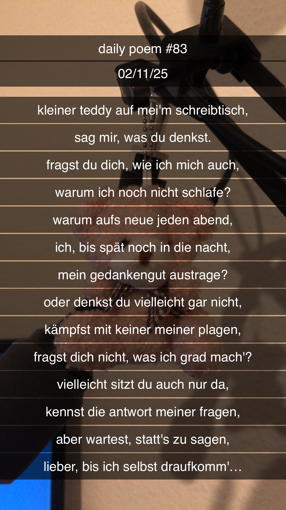

Kleiner Teddy
[83]Kleiner Teddy auf mei'm Schreibtisch,
Sag' mir, was du denkst!
Fragst du dich, wie ich mich auch,
Warum ich noch nicht schlafe?
Warum auf's Neue, jeden Abend,
Ich bis spät noch in die Nacht
Mein Gedankengut austrage?
Oder denkst du vielleicht gar nicht,
Kämpfst mit keiner meiner Plagen,
Fragst dich nicht, was ich grad' mach'?
Vielleicht sitzt du auch nur da,
Kennst die Antwort meiner Fragen,
Aber wartest, statt's zu sagen,
Bis auch selber ich's erahne...
